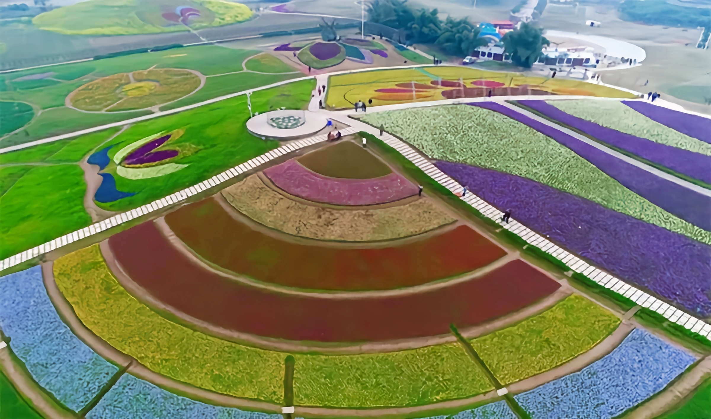

2020年全国新城区综合竞争力百强
铜梁区
总面积1342平方千米。县人民政府驻地邮:402560。代码：500224。区号：023。
唐朝置县，因县城东铜梁山而得名。其右梁横亘，
形如五屏，每当阳光照射，石梁呈古铜色，故名铜梁。
地处东经105°46′－106°16′，北纬29°31′－30°06′位
于重庆市西北部，四川盆地东南，川中丘陵与川东平
行岭谷交接地带。东南临璧山区，西接潼南、大足县
南毗永川市，北连合川市。县境东西最大距离48公里
南北最大距离62公里。总面积1343平方公里。耕地面
积46651公顷二ＯＯ七年九月四日，该县城经全国爱国
卫生运动委员会命名为国家卫生县城。
| !!!!!!!!!!!!!!!!!!!!!!!!!!!!!!!!!!!!!!!!!!!!!!!!! | 安居古城是中国第四大古城——安居古城地处长江上游地区，在重庆铜梁区城西北部17公里处，距重庆主城九区66公里，曾于隋、唐、明朝时期建县，是一座集独特区位优势、悠久文化底蕴、丰富文物古迹、优美自然风光于一体的千年古城。 |
玄天湖水库是一座集农业灌溉、城市供水、防洪及环境生态保护为一体的中型水库，系重庆市“泽渝工程”项目之一。水库总库容1056万立方米，最大坝高29.69米。 |
|
|  | 黄桷门奇彩梦园是国家AAAA级景区，位于重庆市铜梁区南城街道黄门村，距离城区5公里，园区结合巴岳山、玄天湖、温泉度假区等旅游景区，投资4亿元，是一个集风情小镇、特色农业、生态旅游、休闲观光、养生养老等多种功能于一体的现代农业园区。 |